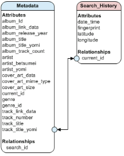

The GNSDK Sample Application includes a user history feature. It stores the results of certain operations and allows the user to view them. When viewed, the history record displays the recognized music, including Cover Art and the location of the user when the operation occurred.
The feature uses a local SQLite database to store the user history information.
A simple data model is used to store the data as shown below.

The Sample Application includes a history database, and uses a helper class, called DataBaseAdapter, to handle it. It creates a simplified interface for managing the database and adding, deleting, and retrieving data from the database.
Internally, DataBaseAdapter uses Android classes that simplify interacting with a SQLite database. The SQLiteDatabase class provides methods for creating a database, deleting a database, and issuing SQL queries. SQLiteDatabase can be used with another helper class, SQLiteOpenHelp, which uses a transaction-based method to interact with the underlying SQL database to ensure it is always in a usable state.
Internally, DataBaseAdapter uses DatabaseHelper, which extends SQLiteOpenHelp and implements the onCreate, onOpen, and onUpgrade methods. When a database is created, onCreate and DatabaseHelper use SQL queries to create the database tables. The SQL queries are used to implement the user history data model.
When results for an appropriate operation are received, an entry is added to the database. Only results from the following operations are stored:
The process of adding an entry to the database is initiated during the callback process. The process retrieves the current GPS location information from the device and submits the results to the database using the DataBaseAdapter.insertChanges method.
The size of the database cannot be allowed to grow indefinitely. After adding an entry to the database, its size is checked to determine if it exceeds a predefined limit of 1000 entries. If there are more than 1000 entries, the oldest entries in the database are deleted, bringing the size back to the predetermined limit.
The Sample Application uses an SQL query to retrieve all the rows in the database. These are returned as a Cursor object that allows each value in each row returned to be extracted using getter methods. The sample application extracts the rows into Locations objects that are used to populate a UI that allows the user to navigate the entries. For large databases, a paging mechanism can be used to reduce the number of rows exported into memory at any one time.